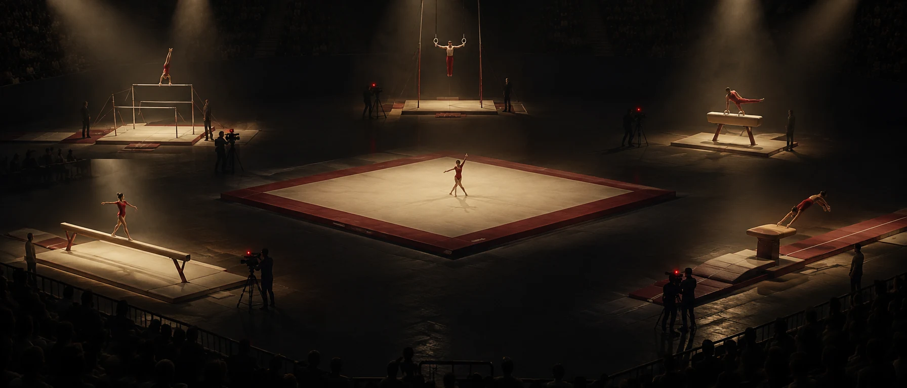

Cookie-uri
Ca să le vezi aici, browserul tău se conectează la YouTube, serviciu al Google Ireland Limited. YouTube primește adresa ta IP și salvează cookie-uri și date similare pe dispozitivul tău, pentru funcționarea playerului, securitate, statistici și reclame. Google poate prelucra datele și în SUA.
Fără acordul tău nu se încarcă nimic de la YouTube.
Alegerea rămâne 6 luni în acest browser. O schimbi oricând din butonul ⓘ de sus. Ce cookie-uri pune YouTube
Ai refuzat cookie-urile YouTube, așa că nu s-a încărcat nimic de la YouTube. Poți deschide fiecare cameră direct pe youtube.com, unde se aplică regulile YouTube:
Folosind ERA Live accepți Termenii de utilizare și Termenii YouTube. Cum sunt folosite datele: Politica de confidențialitate și Politica Google.
O cameră la fiecare aparat. Spectatorii văd tot concursul deodată, măresc aparatul care îi interesează și pot da înapoi, direct din browser.

Imagine generată cu AICând se concurează la mai multe aparate deodată, publicul nu mai trebuie să aleagă unde să se uite. ERA Live adună toate camerele pe un singur ecran.
Bârnă, sol, paralele, sărituri: toate aparatele se văd în același timp, fără să schimbi nimic.
Părinții și antrenorii măresc aparatul care îi interesează. Celelalte rămân la vedere, mai mici.
Dai înapoi 10 sau 30 de secunde pe toate aparatele deodată, sincronizate. Un clic și ești iar la LIVE.
Adaugă linkul live-ului de YouTube pentru fiecare aparat. Primești un link pentru spectatori și un cod QR pentru sală.
Cookie-uri. ERA Live nu pune cookie-uri proprii și nu folosește analiză de trafic. În browser păstrăm doar ce e strict necesar, de exemplu aranjarea camerelor. YouTube pune cookie-uri numai dacă le accepți, când deschizi o transmisiune. Detalii